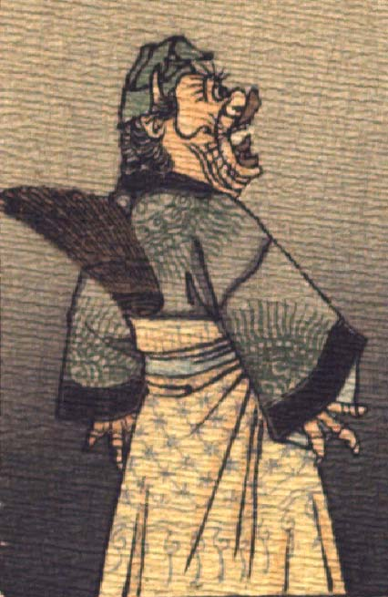

猿のような顔の鬼。緑色の頭巾をかぶり、耳の真上に角を生やしている。目玉は丸く、長いまつげが飛び出ている。鼻は横に広がり、唇は分厚い。口を開けて、驚いたような表情をしている。模様の入った草色の上着と、黄色のスカート状の衣服を身に着け、背に団扇を差している。手指は3本で、皺が寄っており、鳥の足のようである。
著作者：J.Dautremer／出典：親書誌：U426_nichibunken_0123：Le vieillard et les démons／日付：2006／資源識別子：U426_nichibunken_0123_0004_0001
Copyright (c)2010- International Research Center for Japanese Studies, Kyoto, Japan. All rights reserved.